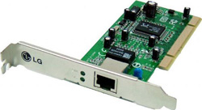
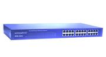
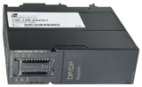
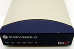
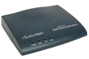
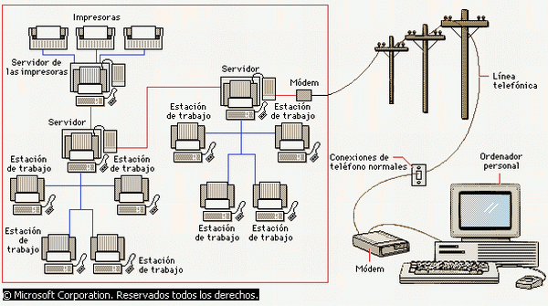

3.3. Componentes de una red
Actividad
Vamos a tratar ahora los componentes de una red.
Empecemos por tu ordenador. Necesitamos tener un dispositivo que convierta la información en señales, bien sea corriente eléctrica o por medio de ondas electromagnéticas.
Los dos medios más habituales son:
- Una tarjeta de red para cable. Es la habitual en los equipos de sobremesa. La gran mayoría son internas, se colocan en la placa base, en las ranuras de expansión. Convierten la información en corriente eléctrica.
- Una tarjeta wifi. Es la que traen incorporada la práctica totalidad de los portátiles. Convierten la información en ondas electromagnéticas.
Decimos que son los más habituales porque puedes tener alguna variante, por ejemplo, un adaptador wifi USB o los módem USB (que conocemos por "pinchos USB" ). Incluso en algunos modelos de móvil basta con conectar por usb al equipo y compartir la conexión. Es lo que se conoce como tethering. Por si fuera poco empieza a haber Internet a través del tendido eléctrico, tanto dentro como fuera de casa. Con enchufar un adaptador conectado al router y otro adaptador donde quieras tener conexión es suficiente. Te recomiendo que leas este artículo.
Lo habitual en una red doméstica es que los equipos se conecten directamente al modem-router (habitualmente llamado router), bien enchufando el cable de red en alguno de los puertos disponible bien por wifi.
¿Qué pasa si estamos en una red un poco más grande? ¿O si de un único cable de red queremos tener conectados dos equipos? Para esto tenemos los hub (concentradores) y los switch (conmutadores). Para que tengas una analogía, si de un enchufe queremos conectar el ordenador, el monitor, los altavoces y la impresora necesitamos usar una tripleta.
Con estos componentes: tarjeta de red, hub/switch y modem-router tendríamos nuestra red doméstica.
Para redes más complejas hay dispositivos específicos como puentes (bridges) para conectar tipos de redes distintas.
Ahora te mostramos algunos ejemplos y más datos:
Dispositivos de red
|
Tarjeta de red.- es un dispositivo que conecta el ordenador u otro equipo con el medio físico. La tarjeta NIC (Network Interface Card) es un tipo de tarjeta de expansión que proporciona un puerto para conectar el cable de red.
|
 |
| Hub/switch- son equipos que permiten organizar y estructurar el cableado de las redes. |  |
| Puente o Bridge.- es un equipo que une dos tipos de redes distintas ando sobre los protocolos de bajo nivel (nivel de control de acceso al medio). Solo el tráfico de una red que va dirigido a la otra atraviesa el dispositivo, lo que permite a dividir las redes en segmentos lógicos, descargando de tráfico las interconexiones. |

|
| Enrutador.- es un dispositivo de interconexión de redes que actúa a nivel de los protocolos de red. Permite utilizar varios sistemas de interconexión mejorando el rendimiento de la transmisión entre redes. Su funcionamiento es más lento que los bridges pero su capacidad es mayor. Permiten, incluso, enlazar dos redes basadas en un protocolo, por medio de otra que utilice un protocolo diferente. |

|
| Módem.- es un dispositivo que permite a los ordenadores comunicarse entre sí a través de líneas telefónicas gracias a la modulación y demodulación de señales electrónicas que pueden ser procesadas. Los módems pueden ser externos o internos. Lo habitual es que en casa tengamos un modem-router. |

|
|
Img 3,4,5,6,7 y 8. Dispositivos de red Banco de imágenes de ISFTIC |
Medio de conexión
El medio de conexión o medio de transmisión es la forma de conectar físicamente los equipos y transmitir los datos, tanto los terminales entre sí como con el servidor o con otros dispositivos de la red. Tradicionalmente, el medio más utilizado ha sido el cable (trenzado, coaxial o fibra óptica), aunque también se han utilizado los medios inalámbricos (ondas de radio, microondas o infrarrojos).
AV - Reflexión
Es importante que conozcas los tipos de cables que se utilizan en las redes de ordenadores. Por eso te proponemos que realices un pequeña investigación y completes la siguiente tabla sobre los tipos más utilizados de cables.
| Tipo de cable | Descripción | Velocidad de transferencia | Ancho de banda | Imagen |
| Par trenzado (UTP): | ||||
| Cable coaxial: | ||||
| Fibra óptica: |
Puedes encontrar información en distintas páginas web. A modo de ejemplo, pincha aquí.
Terminal
Es cada uno de los ordenadores conectado a la red. También recibe el nombre de nodo o estación de trabajo. Suelen realizar sus propias funciones y contactan con los servidores cuando lo necesitan, bien sea para recurrir al uso de alguno de los recursos compartidos, bien para trabajar con alguna información contenida en él.
Servidor
Cuanto más compleja es una red más se especializan los equipos que la forman. Es el caso de los servidores.
Un servidor es un equipo o un programa que usan los demás componentes de la red. Alguna de sus funciones pueden ser: gestionar el correo que llega a la empresa, gestionar las impresoras, hacer copias de seguridad, incluso podemos tener el caso de terminales tontas.
El servidor físico puede ser uno de los ordenadores de la red con características similares al resto, si la red es de pocos equipos, o un ordenador mucho más potente si se trata de administrar muchos equipos o mucha información. El servidor ejecuta el sistema operativo de red y ofrece los servicios de red a las estaciones de trabajo.
Cuando el servidor es de software, se refiere a un sistema operativo de red (Network Operating System) que posibilita la comunicación entre equipos de una red. Su función es coordinar y manejar las actividades de los recursos del ordenador en una red.
|  |
|
Img 2. Ejemplo de red de ordenadores Imagen obtenida de www.monografías.com (Autor: cecidsousa) |
En el siguiente apartado trataremos con más profundidad algunas aplicaciones de los servidores.
AV - Reflexión
Pre-conocimiento
¿Sabías que ...?
Cada tarjeta de red tiene un número único que la identifica: es la dirección MAC (siglas en inglés de Media Access Control o Control de Acceso al Medio) es un identificador de 48 bits (3 bloques hexadecimales) que corresponde de forma única a una tarjeta o dispositivo de red. Se conoce también como dirección física, y es única para cada dispositivo.
Esta dirección puedes encontrarla en Windows en: En "Buscar", escribe "cmd". Se te abrirá una ventana de comandos. Escribe en la nueva ventana "ipconfig /all". En el listado que te aparece, verás que de cada tarjeta que tienes conectada en tu PC, aparece los datos de la misma. Entre estos datos, está la dirección MAC o dirección física. En Linux, también puedes averiguarlo de una forma parecida. Abres una ventana de comando o terminal y debes escribir el siguiente comando "ifconfig -a".
Si consultas la dirección MAC de tu propia tarjeta de red, puedes averiguar cuál es el fabricante de la misma en la siguiente página web:
http://systemadmin.es/herramientas/traducir-mac-a-fabricante-del-equipo